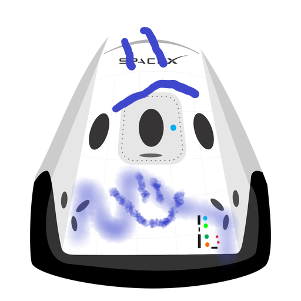

Hyperblog
Tu blog de confianza
Este es el título atractivo e interesante del post
Este es el párrafo que utilizaremos de practica para entender los conceptos de ramas

Los blogs son la mejor forma de compartir informacion y tus ideas. Mucho mas que las redes sociales y/o Youtube.Excepeto si eres un rockkstar, pero estadísticamente no lo eres ... por ahora.
Suscribete y dale like